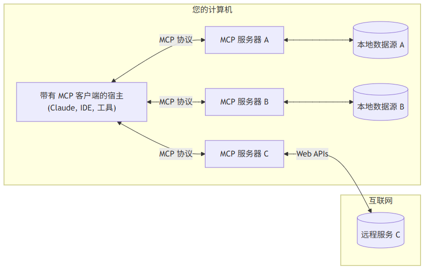
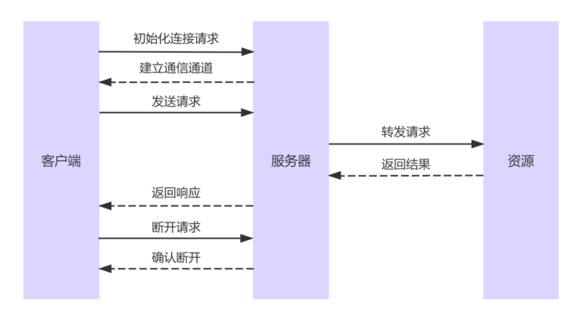

AI学习(二）- MCP
MCP入门
MCP，Model Context Protocol 模型上下文协议
MCP是一种开放的技术协议，旨在标准化大型语言模型（LLM）与外部工具和服务的交互方式。
无MCP的缺点：
第一是接口碎片化：每个LLM使用不同的指令格式，每个工具API也有独特的数据结构，开发者需要为每个组合编写定制化连接代码；
第二是开发低效，模型与工具深度绑定，无法构建统一生态系统，大大增加了迁移成本。
MCP则采用了一种通用语言格式（JSON - RPC），一次学习就能与所有支持这种协议的工具进行交流（JavaScript Object Notation—— Remote Procedure Call）
MCP的特点
- 协议标准化 – 统一 JSON-RPC 2.0 消息格式，任何兼容 MCP 的主机（Claude Desktop、Cursor 等）都能即插即用。
- 本地优先 – 敏感数据留在本地，API 密钥不再暴露给模型提供商。
- 动态扩展 – 新增工具只需启动一个新的 MCP Server，无需改模型或主程序。
- 安全隔离 – 双层授权 + 最小权限 + 端到端加密。
MCP典型使用场景
| 场景 | 举例 | MCP 的作用 |
|---|---|---|
| 个人 AI 助手 | 让 Claude Desktop 直接查本地日历、写文件、发邮件 | 利用 MCP Server 暴露文件系统、邮件接口 |
| 企业自动化 | 在 IDE 里通过自然语言生成 SQL、操作 ERP、CRM | 企业内网部署 MCP Server，连接内部系统 |
| 数据分析 | 实时拉取多源数据（PostgreSQL、Google Sheet、第三方 API）做报表 | 通过 Server 把各种数据源统一暴露给模型 |
| 社区生态 | 一键安装 @wopal/mcp-server-hotnews 获取热门新闻 | 共享 Server 市场，像装 VS Code 插件一样简单 |
MCP vs Function Calling vs Tool
| 维度 | MCP | Function Calling | Tool |
|---|---|---|---|
| 本质 | 开放协议/标准 | 模型自身能力 | 泛指可被调用的外部函数 |
| 架构 | Client–Server（主机-服务器） | 模型直接生成调用指令 | 无统一架构 |
| 耦合度 | 低：一次开发，多模型通用 | 高：需针对模型微调 prompt / schema | 无标准，各自为政 |
| 扩展方式 | 启动新 MCP Server 即可 | 需改 prompt、重训或改代码 | 每换环境重写 |
| 安全模型 | 本地运行、双层授权 | 密钥/数据通常送云端 | 取决于实现 |
| 类比 | USB-C 通用接口 | 各品牌私有充电线 | 单个转接头 |
工作原理
MCP采用CS架构（客户端-服务器），MCP的技术架构可以简单理解为一个由三个核心部分组成的系统：MCP Host、MCP Client和MCP Server，总体架构

MCP主机（MCP Hosts)
MCP主机是发起请求的AI应用程序，它们希望通过MCP协议访问外部数据或工具。例如：Claude Desktop、AI驱动的IDE（如Cursor）、其他AI应用（如聊天机器人、自动化助手等）
MCP客户端（MCP clients)
MCP客户端是MCP主机和MCP服务器之间的桥梁，与服务器一对一进行连接，负责与服务器进行通信，执行数据请求和工具调用。它的主要功能包括：
- 从MCP服务器获取可用的工具列表。
- 将用户的查询和工具描述一起发送给大模型。
- 接收大模型的决策，判断是否需要使用工具。
- 通过MCP服务器调用相应的工具，并获取返回结果。
- 将结果反馈给大模型，由大模型生成最终的自然语言响应。
MCP 服务器(MCP Servers)
MCP服务器是整个架构的核心，它实现了MCP协议，并提供各种功能来支持AI应用。它主要负责：
- 资源：提供可被读取的数据，如本地文件、API响应、数据库等。
- 工具：提供可以被大模型调用的函数或操作。
- 提示词：提供预定义的提示词模板，帮助用户完成特定任务。
每个MCP服务器通常专注于特定的任务，例如：读取和写入浏览器数据、访问本地文件系统、操作Git仓库、连接远程API等等。
本地数据源（Local Data Sources）
MCP服务器可以访问计算机上的本地资源，例如：本地文件（如PDF、Word文档、代码文件）、本地数据库（如SQLite、PostgreSQL）、其他本地应用的数据等等。本地数据源的特点是数据不会上传到远端，确保数据安全性。
远程服务
MCP服务器也可以连接到远程资源，例如：在线API、企业内部系统、其他基于云端的数据服务等等。远程服务通常通过API访问，并由MCP服务器进行管理，来确保访问权限的控制。
通信原理
通信协议
MCP采用JSON-RPC作为底层的通信协议。JSON-RPC是一种基于JSON的轻量级远程调用协议，相较于HTTP来说它更加简洁、高效、容易处理。
| 属性 | HTTP | JSON-RPC |
|---|---|---|
| 本质 | 应用层协议（Web核心协议） | 轻量级RPC协议（基于JSON格式） |
| 数据格式 | 支持JSON/XML/二进制等多种格式 | 强制JSON格式，结构更简洁 |
| 协议功能 | 包含缓存/认证/状态码等完整功能 | 仅定义RPC调用规范（无底层逻辑） |
| 通信模式 | 无状态，支持GET/POST等多方法 | 无状态，基于method字段调用 |
| 适用场景 | Web API、浏览器交互、复杂业务 | 微服务内部调用、物联网等轻量场景 |
| 典型应用 | RESTful接口、网页加载 | 服务间函数调用、嵌入式设备通信 |
通信方式:
STDIO:
采用STDIO的方式，server端会在client端启动时，作为client端的子进程一起启动。这种方式适用于client和server在同一台机器上通信的场景，通常用于工具调试。 它的实现原理是client和server两个进程间通过stdin和stdout进行双向通信。
优点:
- 无外部依赖
- 进程间通信极快
- 脱机可用
缺点
- 并发能力差，是同步阻塞模型
- 不支持多进程通信
SSE:
全名是server send event，是一种基于 HTTP 协议的服务端主动推送机制，客户端通过 EventSource 向服务器发起一个长连接，服务器可以持续不断地通过这个连接发送文本数据。一般用于client在本地，server在远程服务器的场景。
优点
- 简单易用，浏览器原生支持 EventSource。
- 自动重连，断线后自动尝试重新连接。
缺点
- 单向通信（只能服务器推送，客户端不能通过这个连接发送数据）。
- 不支持二进制，只能发送 UTF-8 文本。
- 浏览器兼容性差（不支持 IE，部分移动端兼容性差）。
- 网络问题难以感知：如果网络中断，服务器无感知，继续发送，消息可能丢失。
- 不支持自定义 Header，不便于鉴权。
Streamable HTTP:
Streamable HTTP 本质上仍是标准的 HTTP 请求，但服务器端采用分块传输（chunked transfer encoding），可以在响应体中逐块输出数据，实现流式返回。
SSE 虽然在早期实现服务端推送场景中提供了一种简洁方式，但随着 AI 模型接口对可靠性、跨平台性、鉴权机制以及链路可控性提出更高要求，SSE 的局限性逐渐暴露。而 Streamable HTTP 凭借其通用性、稳定性和良好的生态支持，成为更适合 AI 场景的流式传输方案。 优点
- 支持流式响应，兼容所有现代浏览器和 HTTP 客户端。
- 与标准 HTTP 完全兼容，便于通过 API Gateway / 代理层传输。
- 支持自定义 Header，适配各种鉴权方案。
- 可在客户端感知中断，便于处理异常恢复。
- 不依赖浏览器特性（无需 EventSource）。
缺点
- 实现稍复杂，需要服务端显式使用 chunked encoding 或异步框架支持。
- 不像 WebSocket 那样全双工（但足够满足大多数 AI 交互需求）。
工作流程

连接：建立通信通道
首先，MCP主机需要连接到MCP服务器。这个过程类似于电脑连接到网络服务器。MCP客户端启动并查找可用的MCP服务器。服务器验证请求，建立通信通道。连接建立后，客户端可以获取可用的资源、工具和提示信息。这种连接方式的好处是灵活性极高，主机应用可以同时连接多个MCP服务器，从而获取不同的数据源或工具。
发送请求：主机请求数据或操作
当用户在AI应用中提出请求，MCP客户端会解析用户输入，识别任务类型，然后选择合适的MCP服务器发送请求。请求可以是数据查询、函数调用或执行特定任务。
处理请求：服务器执行操作
服务器收到请求后，会执行相应的操作，可能涉及到访问本地数据源、调用远程API、执行计算任务或者组合多个数据源提供综合信息。
返回结果：服务器将响应发送回主机
MCP服务器完成请求处理后，会将结果打包并发送回MCP客户端。这一步类似于我们在浏览器输入网址后，服务器返回网页内容。
生成响应：AI处理数据并反馈给用户
MCP客户端收到服务器返回的数据后，会将其传递给AI应用，进行进一步处理，例如：解析数据并以用户可理解的方式呈现、根据数据生成最终的AI响应、调用额外的工具或插件等等。
断开连接(可选)
在某些情况下，MCP客户端可能会主动断开与服务器的连接，例如：任务已完成无需继续访问、服务器端长时间未收到请求并自动断开、服务器需要进行维护并强制断开连接等等。当然，如果MCP服务器需要长期提供服务，连接也可以保持活跃，确保随时可以处理新的请求。
MCP服务器
- 角色定位：MCP Server 是跑在本地或远程的“轻量级能力插件”，向上为 LLM/Agent 暴露标准化的 资源（Resources）、工具（Tools）、提示（Prompts）三类能力，向下则安全地访问文件、数据库、API 等实际数据源。
- 架构位置：整个 MCP 采用经典 C/S 架构——Host（Claude Desktop、IDE 等）→ MCP Client（1:1 连接）→ MCP Server → 本地/远程资源。
服务器种类
当下主流的与大模型交互的三要素无非是：工具、资源、提示词，而mcp针对这三类均做了标准化处理。 以下是几个重要的功能：
- Resouces ：定制化地请求和访问本地的资源，可以是文件系统、数据库、当前代码编辑器中的文件等等原本网页端的app 无法访问到的 静态资源。额外的 resources 会丰富发送给大模型的上下文，使得 AI 给我们更加精准的回答。
- Prompts ：定制化一些场景下可供 AI 进行采纳的 prompt，比如如果需要 AI 定制化地返回某些格式化内容时，可以提供自定义的 prompts。
- Tools ：可供 AI 使用的工具，它必须是一个函数，比如预定酒店、打开网页、关闭台灯这些封装好的函数就可以是一个 tool，大模型会通过 function calling 的方式来使用这些 tools。 Tools 将会允许 AI 直接操作我们的电脑，甚至和现实世界发生交互。
一些公开在线的MCP服务器：
- MCP官方服务器合集：https://github.com/modelcontextprotocol/servers
- MCP Github热门导航：https://github.com/punkpeye/awesome-mcp-servers
- MCP工具注册平台：https://github.com/ahujasid/blender-mcp
- MCP导航：https://mcp.so/
- 魔搭 MCP：https://www.modelscope.cn/mcp
- 阿里云百炼：https://bailian.console.aliyun.com/?tab=mcp
MCP服务器开发
编写服务端脚本
使用 MCP Inspector 调试器进行调试（本地安装或临时调试）
推荐临时调试无需下载：npx @modelcontextprotocol/inspector node 你的脚本.py
在浏览器中打开调试页面，连接服务器之后可以进行调试
除了Tools功能的服务器外，MCP还支持Resources类服务器和Prompt类服务器，其中Resources服务器主要负责提供更多的资源接口，如调用本地文件、数据等，而Prompt类服务器则是用于设置Agent开发过程中各环节的提示词模板。
MCP 客户端
MCP中一个基础的客户端代码结构总结如下：
| 代码部分 | 作用 |
|---|---|
MCPClient.__init__() |
初始化 MCP 客户端 |
connect_to_server() |
MCP 服务器连接 |
chat_loop() |
提供交互式聊天界面 |
cleanup() |
释放资源 |
main() |
启动客户端 |
asyncio.run(main()) |
运行程序 |